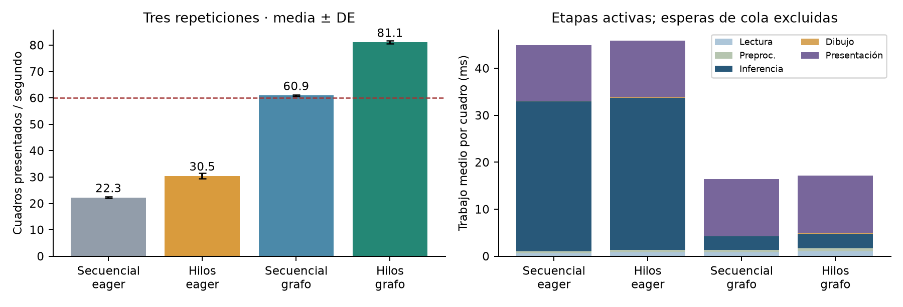
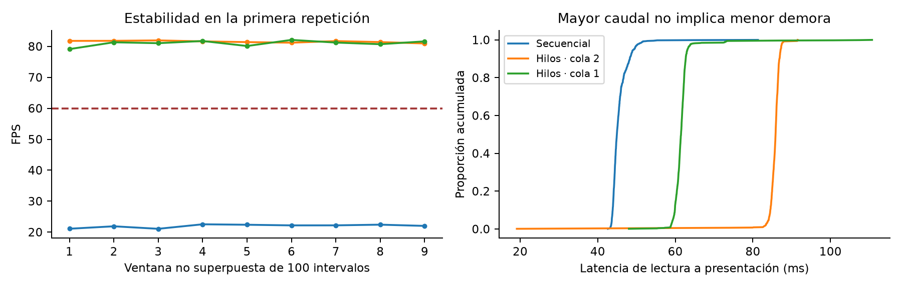
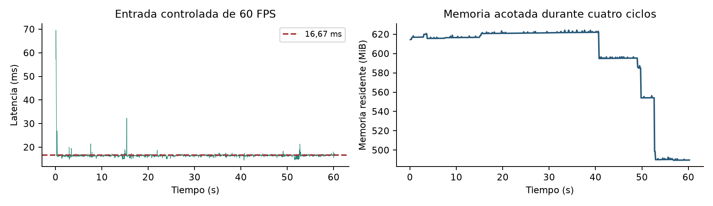
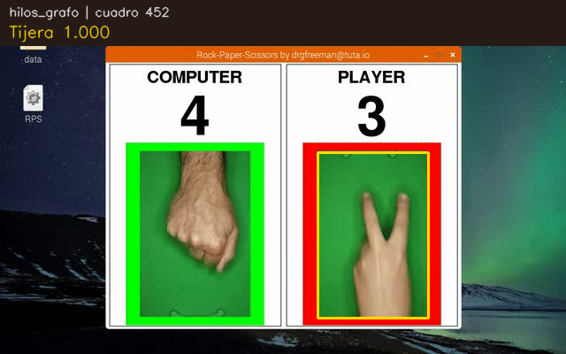

Notebook y código: Abrir la actividad 4 en el repositorio público de GitHub.
Optimizamos el clasificador de papel, piedra y tijera de la actividad 3 sin modificar sus pesos ni su resolución de entrada. Medimos el ciclo completo de lectura, preparación, inferencia, dibujo y presentación. Buscamos superar 60 cuadros presentados por segundo en una reproducción acelerada y conservar la correspondencia entre cada imagen y su predicción.
Usamos la demostración pública rps.gif del repositorio de DrGFreeman, con la licencia MIT conservada. El archivo tiene 904 cuadros de 640 × 400 y 60,27 s según sus retardos originales de 60/70 ms. Lo convertimos a AVI MJPG con los mismos cuadros, a 14,29 FPS y 63,28 s. El benchmark sin espera lee el archivo tan rápido como permite el pipeline; no representa una cámara de 81 FPS.
Recortamos el panel del jugador con ROI (359, 172, 484, 359), giramos 90° en sentido horario y aplicamos RGB y letterbox a 128 × 128. La región es fija y conocida; no usamos un detector de manos. Una regla sobre el fondo verde muestra “Sin gesto” cuando hay poco primer plano. Aun en esos cuadros ejecutamos la red, para mantener comparable el costo.
Cada paquete conserva su id, imagen y logits. Transferimos su propiedad entre tareas; no compartimos un “último frame” que pueda cambiar durante el dibujo. queue.Queue sincroniza el acceso. Las esperas tienen timeout, un Event coordina la salida y un centinela indica fin de video. Las excepciones llegan al hilo principal y todos los hilos se unen al cerrar.
Ejecutamos sobre CPU M4 Pro, 12 núcleos, 24 GB y macOS 26.6.2. Usamos Python 3.12.11, TensorFlow 2.21.0, OpenCV 4.14.0 con ventana Cocoa y el modelo finetuning_s42.keras. TensorFlow utiliza dos hilos intraoperación y uno interoperación; OpenCV, uno. No hubo GPU visible en TensorFlow ni entrenamiento concurrente durante las mediciones.
Comparamos un diseño 2 × 2: secuencial/hilos y ejecución eager/grafo. En cada caso mantenemos archivo, ROI, resolución, pesos, 904 cuadros, presentación y ausencia de descartes. Excluimos 30 inferencias de calentamiento y alternamos el orden de casos en tres repeticiones. Después probamos capacidad de cola 1 con otras tres repeticiones. Esta sensibilidad se hizo en un proceso distinto y puede tener diferencias de caché o memoria.
Conservamos el código medido en resultados/pipeline_version_medida.txt. La revisión posterior refuerza la lectura de errores entre hilos y distingue una cancelación de una ejecución completa; no modifica el modelo ni las etapas de procesamiento.
Tomamos tiempos con perf_counter. Materializar los logits con .numpy() completa la inferencia en CPU. Registramos lectura, preprocesamiento, inferencia, esperas de cola, dibujo y presentación por separado. CPU se calcula con tiempo de proceso / tiempo real; 100 % equivale a un núcleo. Muestreamos memoria residente cada 100 ms.
| Caso | FPS ± DE | Inferencia ms | CPU % ± DE | RSS máx. MiB |
|---|---|---|---|---|
| Secuencial eager | 22.25 ± 0.30 | 31.99 ± 0.55 | 77.15 ± 0.32 | 560.8 |
| Hilos eager | 30.46 ± 1.11 | 32.38 ± 1.19 | 107.26 ± 0.83 | 393.8 |
| Secuencial grafo | 60.92 ± 0.33 | 2.88 ± 0.06 | 38.97 ± 0.17 | 389.7 |
| Hilos grafo | 81.08 ± 0.56 | 3.11 ± 0.19 | 57.59 ± 3.46 | 398.0 |
| Final: grafo, cola 1 | 80.79 ± 0.23 | 3.19 ± 0.07 | 58.30 ± 2.04 | 603.0 |

Los hilos solos elevan el caudal a 30,46 FPS, pero eager sigue limitando la inferencia (32,38 ms). El grafo baja ese tiempo a unos 3 ms. En secuencial, la presentación aún se suma a la inferencia y limita la estabilidad sobre 60 FPS. Al solapar ambas tareas alcanzamos unos 81 FPS. La presentación, de unos 12 ms por cuadro, pasa a ser el principal límite.
A máxima velocidad, la captura se adelanta a la presentación y las colas se llenan. Por eso un mayor FPS puede coexistir con más tiempo desde lectura hasta pantalla. Reducimos la capacidad de cada cola de dos a un cuadro: el caudal apenas cambia (81,08 frente a 80,79 FPS) y la latencia media baja 28,3 %, de 85,93 a 61,59 ms. No descartamos cuadros para obtener esa mejora.
| Configuración | Media ms | p50 ms | p95 ms | p99 ms |
|---|---|---|---|---|
| Secuencial eager | 44.93 | 44.53 | 47.51 | 50.26 |
| Hilos grafo, cola 2 | 85.93 | 86.21 | 87.51 | 88.46 |
| Hilos grafo, cola 1 | 61.59 | 61.65 | 62.76 | 66.63 |
| Entrada controlada 60 | 16.58 | 16.48 | 16.87 | 17.79 |
Las primeras tres filas promedian las métricas de las tres repeticiones; no son percentiles de todas las observaciones mezcladas. La última fila corresponde a una sola corrida sostenida.

Repetimos el video cuatro veces y programamos llegadas cada 16,67 ms. Se procesaron y presentaron 3.616 cuadros en 60,27 s, sin pérdidas: 59,996 FPS. La latencia media fue 16,58 ms y p95 16,87 ms. La menor ventana alcanzó 59,92 FPS; no afirmamos que esta prueba supere 60, porque la propia entrada limita la tasa.

Comparamos eager y grafo, imagen por imagen, con el mismo modelo y lote unitario. No cambiamos pesos, resolución, precisión numérica solicitada ni preprocesamiento. Las diferencias pequeñas en probabilidades son compatibles con el orden de operaciones de punto flotante.
| Conjunto | Imágenes | Clases cambiadas | Δ prob. máx. | Exactitud, ambos |
|---|---|---|---|---|
| test | 437 | 0 | 5.36e-07 | 100.00 % |
| externo | 372 | 0 | 2.86e-06 | 64.52 % |
En 17.176 registros de video, comparados con la referencia del cuadro correspondiente, hubo cero cambios de clase; la diferencia máxima de confianza fue 2,21 × 10⁻⁶. El conteo incluye repeticiones y la propia referencia, no imágenes independientes. Los ids fueron consecutivos, sin pérdidas, duplicaciones ni reordenamiento. El cuadro original viaja junto con su predicción hasta el dibujo.

Medimos ciclos de presentación con imshow y waitKey, no la tasa física del panel ni latencia cámara-fotón. El sistema operativo puede agrupar actualizaciones. El resultado de más de 60 FPS corresponde al loop visual del programa con reproducción acelerada. No demuestra captura de nuevas imágenes a esa frecuencia ni elimina toda demora bajo saturación.
Provocamos una fuente inexistente en la versión con hilos. El error se propagó y terminaron captura, inferencia y monitor de recursos, sin hilos residuales. Las colas acotadas y el cierre con Event/centinelas evitan crecimiento ilimitado y esperas indefinidas en operaciones de cola. El código detecta si un hilo no termina durante el cierre.
El video no tiene etiquetas independientes por cuadro: verificamos equivalencia entre implementaciones, no una exactitud del 100 % en video. Proviene del mismo autor que las fotografías, así que tampoco prueba generalización a personas nuevas. La calidad cuantificada procede de prueba real y CGI de la actividad 3. El 64,52 % CGI de esta tabla es de la semilla 42; la media de las tres semillas es 57,80 %.
La regla de fondo no es una clase entrenada “sin mano”, y puede fallar ante iluminación u objetos distintos. La ROI y el giro están adaptados a esta demostración. Para una cámara general se requiere localizar la mano, etiquetar una prueba nueva y medir también exposición, captura y presentación física.
Grafo: reduce la sobrecarga de ejecución de un modelo pequeño, como describe TensorFlow. Hilos: solapan captura e inferencia con presentación; no suponemos que el GIL acelere cálculos Python puros. Colas de capacidad 1: mantienen todos los cuadros y reducen espera frente a capacidad 2. CPU: fue suficiente para este caso; no atribuimos beneficios a una GPU no utilizada.
La inferencia final tarda 3,19 ms en promedio y la CPU equivalente usa 58,30 %. Ese porcentaje no representa 58 % de los 12 núcleos. El RSS máximo final fue 603,0 MiB y en la prueba sostenida, 624,3 MiB. Los procesos incluyen TensorFlow, bibliotecas y cachés: la diferencia de RSS entre procesos no puede atribuirse solo al tamaño de las colas. La estabilidad de un minuto no sustituye una prueba de larga duración.
El notebook A4_pipeline_concurrente_rps.ipynb revisa los CSV originales. El script completo es src/pipeline_a4.py. Con OpenCV de escritorio disponible, desde la carpeta que contiene src/:
# Comparación factorial: tres repeticiones con ventana python src/pipeline_a4.py --display --reps 3 --tag nueva # Configuración final; sin espera de origen python src/pipeline_a4.py --display --reps 3 \ --modes hilos_grafo --queue-size 1 --tag nueva_cola1 # Llegadas controladas: cuatro ciclos, aproximadamente un minuto python src/pipeline_a4.py --display --reps 1 --loops 4 \ --modes hilos_grafo --queue-size 1 --pace --pace-fps 60 \ --tag nueva_60
Sin --display se mide procesamiento, no presentación. --pace sin --pace-fps respeta el FPS del contenedor. Los tags nuevos preservan las mediciones entregadas. README_entrega.md detalla instalación, rutas y ejecución; analisis.json conserva hashes del modelo y el AVI.
La combinación de grafo y concurrencia produjo una mejora medible de 3,63 veces sin alterar las clases predichas. El cuello de botella pasó de inferencia a presentación. Cumplimos el objetivo de más de 60 ciclos visuales por segundo en el entorno medido; la entrada controlada mostró una demora próxima a un cuadro. El resultado se limita a este hardware, fuente y protocolo.
de la Bruère-Terreault, J. (s. f.). rps-cv [Software y demostración]. GitHub. https://github.com/DrGFreeman/rps-cv
OpenCV Team. (s. f.). Performance measurement and improvement techniques. https://docs.opencv.org/4.x/dc/d71/tutorial_py_optimization.html
Python Software Foundation. (s. f.). threading - Thread-based parallelism. https://docs.python.org/3.12/library/threading.html
Python Software Foundation. (s. f.). queue - A synchronized queue class. https://docs.python.org/3.12/library/queue.html
TensorFlow. (s. f.). Better performance with tf.function. https://www.tensorflow.org/guide/function
Ultralytics. (s. f.). Model benchmarking with Ultralytics YOLO. https://docs.ultralytics.com/modes/benchmark/